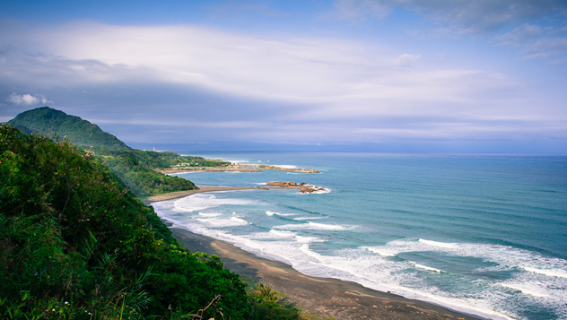
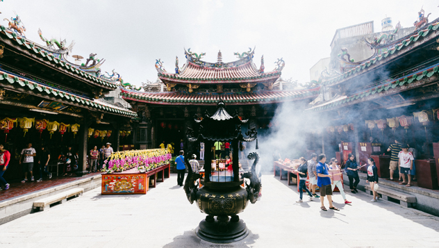

En la costa sureste de Taiwán, el condado de Taitung, atractivo y con forma de caracol, es el mejor secreto del país. Escapa al turismo de masas a pesar de contar con una parte de la geografía más espectacular (*) de la isla y de sus profundas raíces culturales.
(*) Un poderoso tifón sacudió Taitung el 8 de julio del 2016, causando dos muertes, muchos heridos y daños importantes en las infraestructuras de la región. Mientras se redactaba este artículo los trabajos de limpieza seguían activos, y estaba previsto que durasen varias semanas. Conviene que el viajero se informe del estado del país antes de viajar.
Un montón de globos Al llegar el verano, el cielo de Taitung es el más colorido de Taiwán gracias a los globos aeroestáticos del Taiwan International Balloon Fiesta. Los meses de julio y agosto, globos multicolores y de diseños curiosos sobrevuelan la verde y plácida meseta Luye, a media hora en automóvil desde la ciudad de Taitung.
El festival es gratis, aunque si el viajero desea montar en un globo deberá comprar una entrada (500 TWS por un vuelo amarrado o 9000 TWS por un paseo de 45 min). No hay que perderse los espectáculos de luz nocturnos, cuando los globos amarrados, iluminados por dentro, bailan al son de la música como burbujas gigantes de luz.
La costa del Pacífico - La East Coast de Taiwán posee uno de los litorales más espectaculares de Asia, con el Océano Pacífico, de color azul cristalino, extendiéndose hacia el este en olas sin fin. La casi recta Highway 11 regala vistas perfectas y es lo suficientemente llana como para recorrerla en bicicleta o en un agradable paseo en automóvil, pasando por el Trópico de Cáncer a medio camino entre el Taroko National Park y Taitung. Esta costa escarpada tiene las condiciones óptimas para la observación de estrellas. En las noches claras,
lejos de las luces urbanas, se pueden ver los astros en todo su esplendor desde un sinfín de rincones panorámicos. Jialulan (a unos 7 km de la ciudad de Taitung) es ideal para contemplar el cielo, y alberga conciertos de música folk y mercados de artesanía con madera reciclada de playa las noches de los domingos. Coconut Beach B&B, al norte de la ciudad, en una playa remota con forma de media luna, atrae a los observadores de estrellas con sus habitaciones con terraza y sus telescopios para huéspedes.
Recorrer en bicicleta la ruta oceánica al norte de Taitung es inolvidable. Al oeste se alza la Cordillera Central, y al este las vistas se precipitan de forma espectacular por la costa escarpada que bañan las aguas turquesas del Pacífico. Se puede cenar algo de marisco en uno de los locales de Fugang Harbour, o darse un chapuzón en las playas doradas semi desiertas a lo largo de la costa (San Yuan es la más próxima a la ciudad de Taitung). En el pueblo de Dulan, 20 km al norte, vive un grupo de expatriados que regenta bares, albergues mochileros y panaderías. En noviembre Dulan acoge el anual Taiwan Open de Surf de Taiwán.
Un festival encendido - La ciudad de Taitung es una soñolienta red de calles arboladas junto al océano. Los jóvenes la abandonan por las veloces economías de las ciudades de la costa oeste de Taiwán, y la voz cantante la llevan los ancianos. Por ello Taitung es historia viva, algo que no se encuentra en ninguna otra parte de la isla. El evento del año siempre es el Bombing Master Handan, un escandaloso festival que celebra el Año Nuevo Chino.
Las calles se llenan de humo y chispas mientras los espectadores lanzan petardos a un hombre semidesnudo que desfila por la calle en una silla de mano. Representa al Señor Handan, el dios de la riqueza, y los petardos tienen la función de mantenerle caliente y feliz. Aunque uno se pierda la fiesta de Handan, hallará historia por toda Taitung. Las calles están llenas de preciosos edificios antiguos de la época japonesa, reconocibles por sus tejados oscuros y sus vigas negras. Las tardes soleadas, cada dos calles parece haber un templo taoísta con pilares rojos y temibles dragones de cerámica.
El más grande y el más imponente es el Tianhou Temple, con impresionantes aleros de dragones ondulantes y faroles rojos.
Fruta, pescado y flores- Es casi imposible viajar por Taiwán sin toparse con un mercado nocturno, y Taitung, con dos, (en las calles Zhengqi y Siwei) no es una excepción. La proximidad con el océano garantiza abundante marisco fresco (el calamar a la parrilla es sabrosísimo). Si al viajero le gusta la fruta y viaja a Taitung en verano, puede probar el anón, una fruta famosa en toda la isla. Parece un huevo de dinosaurio y al abrirla se rompe en pedacitos dulces.
Taitung también es célebre por el tofu fermentado (todos los pueblos de Taiwán lo consideran propio), la sopa de sangre de cerdo, y los fideos de arroz con caldo de cerdo y virutas de pescado seco. Destacan los platos de caza (hay poca oferta vegetariana), y el tentempié más popular es la isavay, una bola de arroz pegajoso con carne de cerdo o pescado envuelta en hojas. En septiembre se puede ir al sur a ver los campos de lirios naranjas (o lirios de día) de Taimali. A primera hora de la mañana, cuando se desvanece la niebla de las montañas, los campos de flores aparecen como por arte de magia. En los restaurantes de carretera fríen los pétalos como un rico tentempié, o los añaden al caldo de carne.
Una cultura singular Un 35 % de los habitantes del condado de Taitung son indígenas de distintos grupos étnicos. El excelente National Museum of Prehistory cuenta sus historias y es un buen sitio para comprender el derecho de movimiento de los pueblos indígenas de Taiwán. Destaca la exposición sobre rituales de brujería de los bunan. Taitung también es punto de partida a las dos islas indígenas de Taiwán, Green Island y Lanyu (isla Orquídea). Los ferris salen de Green Island, desde Fugang Harbour. A isla Orquídea, más lejana, solo se llega en avión.
A finales de verano los pueblos del condado celebran las fiestas de la cosecha, durante las cuales la gente se viste con los trajes tradicionales y se reúne en una gran explanada a comer, beber y bailar. Suelen contar con conciertos de bandas nativas, que marcan el auténtico comienzo de la fiesta. Tiehua Music Village, en la ciudad de Taitung, es un buen sitio para escuchar grupos locales todo el año.